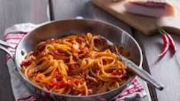

Amatriciana

Description
The Amatriciana is one of the most famous Lazio's dishes. Quality ingredients are the key here; San Marzano
tomatoes may be more expensive than an average tin but are well worth the price tag. They have fewer seeds, which
make them great for sauces, and their flavour is sweeter and a little less acidic. Guanciale is cured pig jowl, it
has a stronger, porkier flavour than other cured meats and really adds depth of flavour to the dish (though a high
quality pancetta can be used instead if you can't find it anywhere).
Ingredients
- Guanciale or good quality Pancetta, diced into 0.5 cm cubes;
- San Marzano Tomatoes;
- 1/2 onion, diced (optional);
- 1/2 red chilli (optional);
- White wine;
- Olive oil;
- Bucatini pasta;
- Pecorino romano and basil leaves.
Steps
- To begin, slowly heat the diced guanciale with a tablespoon of olive oil over a medium-low heat. If using onions and
chilli, add them to the pan to soften in the rendered fat, cooking them until soft but without colour
- Once the guanciale is lightly golden, add the white wine and reduce by three quarters
- Add the tin of tomatoes (if using whole tomatoes, roughly chop them first)
- Cook down on a low heat for 10-15 minutes until the sauce has thickened. Taste and add salt and a pinch of sugar if necessary
- Cook the pasta in a pan of heavily salted boiling water for 8-10 minutes, or as per packet instructions
- Once the pasta is al dente, drain and add it to the sauce, tossing to make sure the pasta is evenly coated
- Serve straight away with plenty of grated Pecorino Romano and some torn basil leaves
- Enjoy!